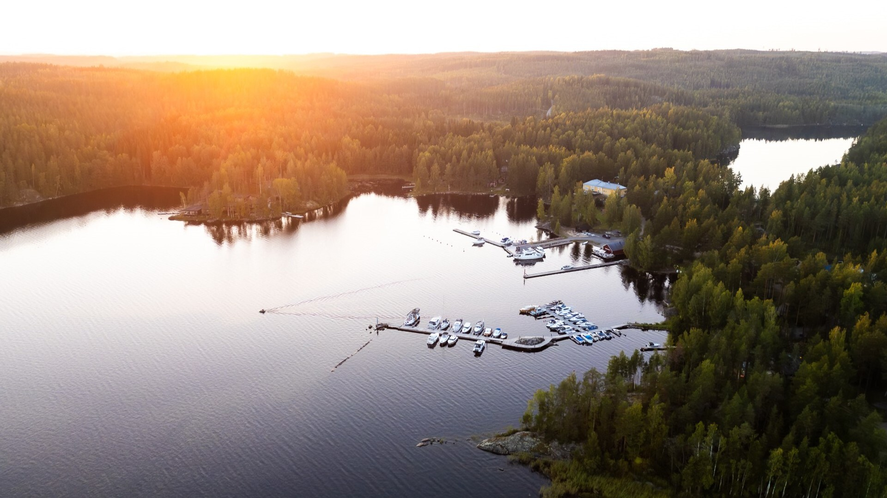
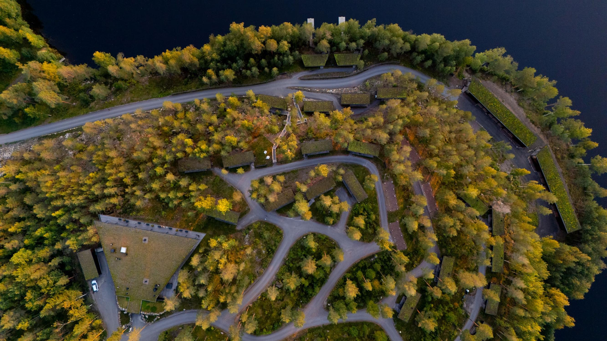

Projektipalaveri — 7. huhtikuuta 2026
Arctic Cruises
Saimaa
Risteile maailman puhtaimmissa, jääkauden muovaamissa vesissä

Käsitellään tässä palaverissa — onko Laura valmis ottamaan roolin?

Operaattorit saapuvat HEL:stä. Check-in hotelliin. Tervetulotilaisuus ja -illallinen.
🏛️ Lappeenranta kaupunki maksaa yön + illallisen

M/S Karelia lähtee klo 10:00. Pysähdys Imatralla. Saapuminen Sahanlahteen klo 17:30. Verkostoitumisillallinen.
🏨 Visit-organisaatiot maksavat majoituksen

Lähtö 09:00, pysähdys Savonlinnassa. Saapuminen Järvisydämeen. Gaalailtallinen + 2027 tuote-esittely.
🔥 Visit-organisaatiot maksavat majoituksen
3.9. aamupäivällä: tilausbussi Järvisydän → Helsinki-Vantaa (klo ~10:00–13:30) · Majoitukset + kuljetukset = Visit-organisaatioiden vastuu

M/S Karelia kulkee Saimaan kanavaston sydämessä. Kolme samanaikaista silmukkaa 2027 kaudella — 18 lähtöpäivää.
🌿 UNESCO Saimaan biosfäärialue · 🦭 Saimaan norppa ~530 yksilöä
🏆 Euroopan gastronomiaregion 2024 · 🚂 HEL→LPR Pendolino ~2h30